Stubley Old Hall
Situated half a mile from Littleborough on the south side of the road to Rochdale is Stubley Hall, a two‑storey house. The front of the house faces west and has three wings, with the open courtyard to the east. John de Holt bought the hall in 1330 from Nicholas, John de Stubley. It is said that Stubley Hall was rebuilt by Robert Holt around 1529, although this cannot be verified. The reconstruction and renovation work was not recorded, and details of the original house were not documented. In 1640 Robert Holt, the owner of Stubley Hall, moved to Castleton.
Stubley Hall was built in the reign of Henry VIII and was the first display of an entire house of brick and stone with a centre and two wings only (Whitaker, History of Whalley, 3rd edition, 1818, p.453).
In 1626 Stubley Hall was described as “an ancient mansion with stables, barns, dovecotes and water mill” (Survey of 1626, quoted in Fishwick’s Rochdale). The roof had stone slates and the gable ends were faced in stone.
Stubley Hall was documented as having the following rooms in the inventory of goods in the will of Robert Holt, who died in 1561:
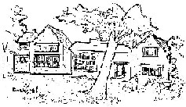
The great chamber
My lord’s chamber
The inner chamber
The new parlour
The closet
The hall (approximately 36 ft long by 23 ft wide)
The inner parlour
The old parlour
St Myghell’s chamber
The chamber without
“Syling Timber” is also referred to twice.
Stubley Hall had a domestic chapel, probably situated at the east end of the south wing, and divine service was held there prior to Littleborough church being built. At the end of the 18th century Rev. T. D. Whitaker wrote: “the house contained much carving in wood, particularly a rich and beautiful screen betwixt the hall and parlour, with a number of crests, ciphers, and cognizances belonging to the Holts and other neighbouring families.”
John Holt of Stubley was High Sheriff of Lancashire in 1620.
Follow the link for an article including a brief history of the Holts inhabiting Stubley Hall near Littleborough and Castleton Hall, south of Rochdale, for nearly three centuries.
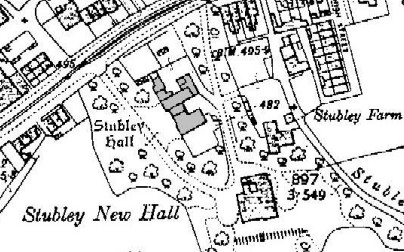
Map of Stubley Hall, Littleborough, 1910
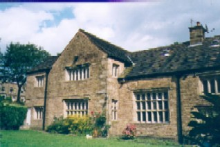
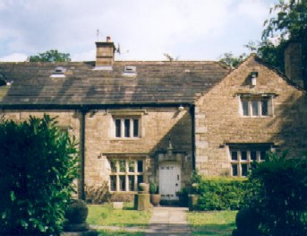
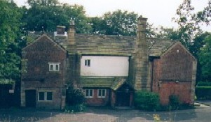
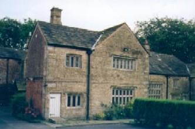
This old window displays various coats of arms.
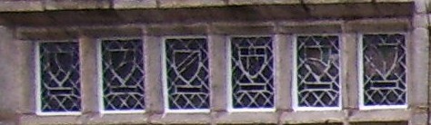
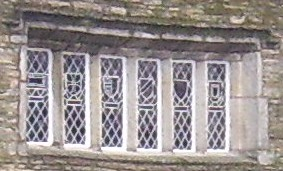
Close‑ups of the window glass are below.
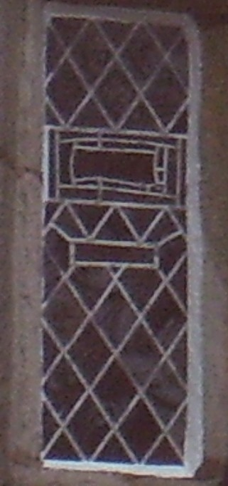
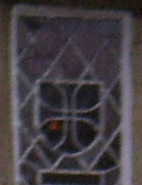
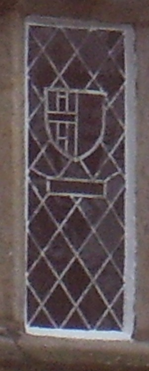
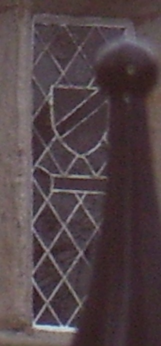
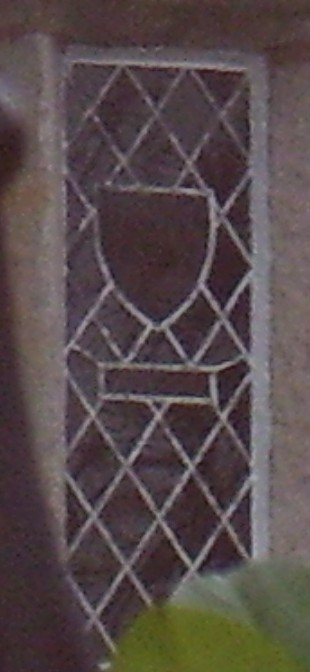
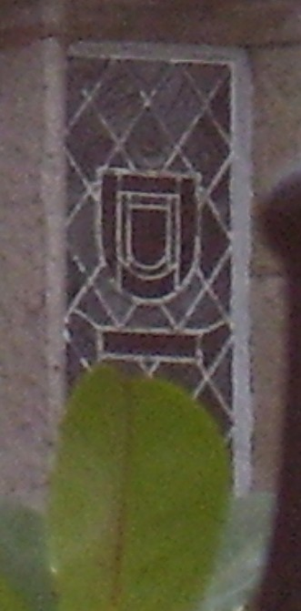
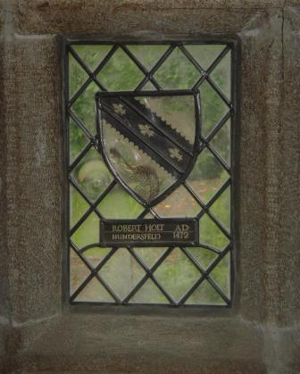
Robert Holt, Hundersfield, AD 1472